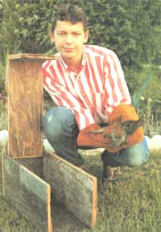

A Garden Varmint Trap: Mother's Children
How to build a humane box trap to protect your vegetable plot, including materials, diagram, how the trap works, construction.
July/August 1987
Issue # 106 - July/August 1987
By Matt Haight
Matt wears stiff gloves when handling any animal-like this rabbit-caught in his garden-guarding trap. He uses unshelled corn or pieces of apple for rabbit bait, and walnuts and lure squirrels. To protect his trap from human thieves, he always sets it in an out-of-sight, sheltered location.
MOTHER knows that many youths undertake interesting, original projects and also start their own small businesses. To support these endeavors, we buy and publish well-written articles from children and teenagers concerning their efforts. However, we recommend that all young authors query (that is, send us a letter telling about the story they'd like to do) before writing a full article. Send your queries to Mother's Children, Mother Earth News, P.O. Box 70, Hendersonville, NC 28793.
Having trouble with varmints in your garden? If so, you'll appreciate the Haight family secret I'm about to share. Back when I was seven years old, my dad taught me how to build a box trap that will catch rabbits, squirrels, rats, birds and opossums. He learned how to build it from his dad, and we really don't know where Grandpa picked it up. It works great, it's perfectly humane and it's easy to build. You can even make it for almost nothing if you salvage your materials, and it will capture the animals that raid your garden. Then you can simply haul them off and release them in the woods.
Using ¾” plywood or 1" lumber (both are actually ¾" thick), cut two 19" X 8¾ pieces for the sides . . . one 19¼" X 7" piece for the top . . . one 20" X 8¾ piece for the bottom... one 8" X 7" piece for the front... and one 16" X 8¾" piece for the rear. You will also need about 2½' of nylon string, a handful of 2" nails, two 1½" wood screws and a 6" X 6" piece of metal screen.
The trap is simple but effective. When an animal jostles the trigger by chewing on the bait stick, the string that holds up the top and front is released. Those pieces (which, nailed together as a unit, make the trap's door) pivot on their hinge in the back of the trap and fall down. The box then shuts like giant jaws closing shut.
Take the rear piece and cut it as shown in the diagrams, taking off two corners to form a modified V on one end and sawing a small notch at the V's end for the trap's string. Next, nail this piece and the sides onto the bottom. Nail them so they stand on top of the bottom piece (rather than having the bottom fit inside the sides and rear). That way the top will fit snugly on the trap when it closes. Also, as you nail the back to the sides, be sure not to drive your nails too close to the top of the sides. Stop 1" short to leave room for the wood screws that will make the hinge.
Drill a 13/16" hole in the back, 4" from the bottom, for the bait stick to poke through. Cut a 1" hole from the middle of your screen and tack or staple the 6" X 6" screen to the inside back wall. Otherwise, some pests, particularly squirrels, will chew on the hole until they can escape through it.
Now nail one end of the top onto the front to make the door. Put this assembled door in place on the box, leaving about a ¼" gap in the back so the top will have room to swing open and shut. Then drill small holes through your side boards and into the sides of the top for the hinge screws to fit in. The holes should be about ½" from the end of the top. Since you will want the wood screws to fit tightly in the top but swivel freely in the sides, you will need to drill the side holes larger than the ones in the top. Next, put in the l½" wood screws.
Rig up the string by driving a nail partway into the top piece right near the front. Tie the string around this nail and pound the nail over. Then run the string over the back of the trap, laying it in the notch you made on the rear piece.
To make the trigger, first cut a horizontal groove on the outside about 2" above the back wall's hole to help hold the 4" angled stick. Cut that stick, carving the ends to flat tips. Then cut the 11" horizontal bait stick, whittling one end to a point, and carving a notch in the other end as shown in the diagrams. Tie your free string end to the middle of the angled stick, assemble your trap ... and set 'er out!
Fourteen-year-old Matt Haight has been an avid MOTHER reader for years. In fact, when he was in third grade, he read our interview with educator John Holt (issue 64) and convinced his mother to home-school both his older sister and himself! He still studies at home today.

ILLUSTRATION BY DON OSBY
|
|
|